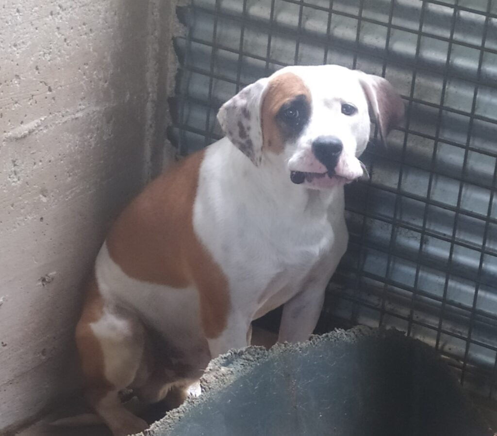

REFUGI ANIMAL


Barcelona
Raça: Mestís
Sexe: Mascle
F.Naixement: 08.08.2022
Tamany: Mitjà
Hola amics, us presento a Culi, aquesta meravella és un preciós mix d'Amstaff, molt jove, no arribarà als 3 anys. Culi ha tingut la desgràcia d'acabar a la gossera, i com podeu veure a les fotos, va arribar amb molta por i molt trista. Culi és molt obedient i afectuós. Si us plau, ajudar-me a difondre'l, a veure si trobem una llar aviat per a ell. Culi es lliura esterilitzat, degudament vacunat, desparasitat i amb els papers en regla. Actualment està en una gossera a prop de Barcelona, però pot viatjar a qualsevol punt d'Espanya. Podeu trucar-me o enviar-me un Whatsapp aquí; 646 958 099 (Juan Carlos) Abraçades i gràcies.